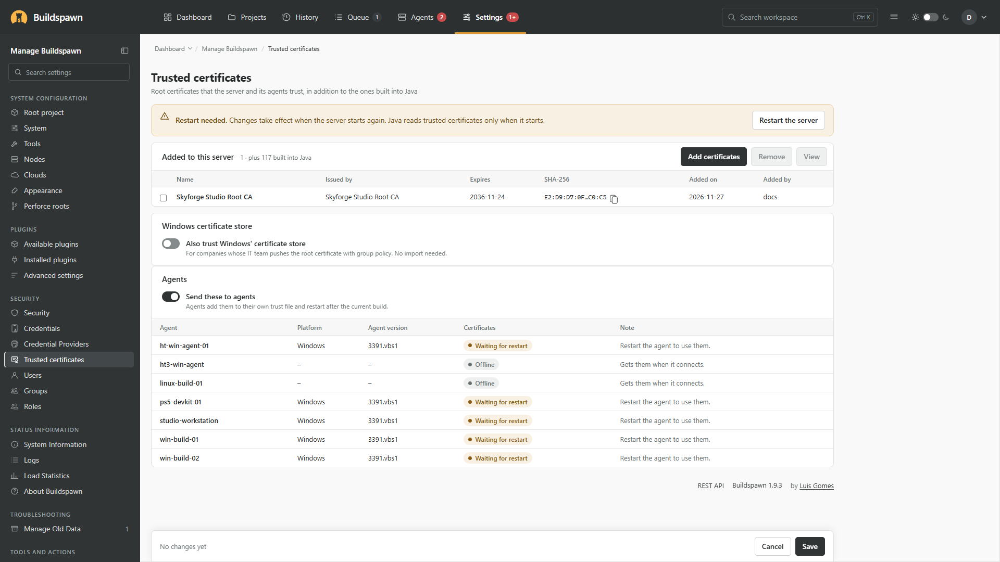

Trust your company’s root CA
Make the server and all agents trust the root certificate of your company, so builds can reach your internal Perforce, Git and package servers over TLS.
Before you start
- You are a system administrator.
- Your builds fail with an error like
PKIX path building failedor unable to find valid certification path when they reach an internal server. - You can get the root certificate from your IT team, as a
.crt,.cer,.pem,.deror.p7bfile, and its SHA-256 fingerprint. Never ask for or paste a private key. - You can restart the server at a quiet time, and agents are version 1.9 or later.
Steps
- Download
nightlight-root-ca.crtfrom your IT portal and write down the fingerprint it shows, for example3F:9A:C1:07:…. - Open Settings › Security › Trusted certificates.
- Click Add certificates, then Choose file…, and pick the file.
- Read the card. It should say Root CA. Compare the SHA-256 with the one from IT. They must match exactly. If they do not, stop and ask IT.
- Click Add 1 certificate.
- Check that Send these to agents is on. On a Windows server whose computers get the root through group policy, you can instead switch on Also trust Windows’ certificate store.
- Click Save if you changed a switch.
- Click Restart the server in the yellow bar, when no important build is running.
- When the server is back, look at the Agents table. Each agent goes from Waiting for restart to Up to date after its current build. Restart any agent that stays on Waiting for restart and says Restart the agent to use them.

You can do the same from a terminal: buildspawn certs add nightlight-root-ca.crt, then restart. See Trusted certificates.
Check it worked
- The yellow Restart needed bar is gone.
- The table Added to this server shows Nightlight Root CA and its expiry date.
- Run a build configuration that talks to the internal server. The console shows no
PKIXerror. - Every agent says Up to date, or Offline (it will get the certificates when it connects).
Troubleshooting
| Problem | What to do |
|---|---|
| The error is still there on the server. | Restart the server. Java reads the list only when it starts. |
| The error is still there on one agent. | Look at its state. Older agent: upgrade it. Waiting for restart: restart it. Offline: start it. |
| The card says Not a CA certificate. | You have the certificate of one server, not the root. It works, but must be replaced when the server’s certificate changes. Ask IT for the root. |
| The card says Expired. | Get a current certificate from IT. |
| The card says Already trusted, skipped. | Nothing to do. It is already trusted. If the error continues, the problem is another certificate in the chain (an intermediate). Add that one too. |
| One agent needs a certificate that other agents should not have. | On that machine, use the agent’s own Certificates tab (tray app) to add it. See Windows tray app. |
Next steps
- Trusted certificates: every part of the page.
- Watch for the notice that warns you 30 days before a certificate you added expires.